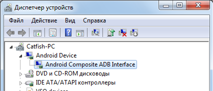
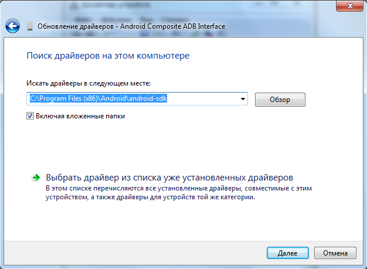

Подключите устройство к компьютеру через USB порт (на устройстве должна быть включена опция USB Debugging)
В диспетчере устройств появится подключенный девайс

Если устройство не найдено или не корректно работает значит драйвера устройства не были найдены. Для этого нам нужно установить на это устройство драйвера из Google USB Driver
Для этого мы выделяем устройство и выбираем “Обновить драйвера” тип поиска “Выполнить поиск драйвера на этом компьютере”.
В окне обновления драйвера указываем путь к папке Android SDK

По завершению установки драйвере перезагрузите ПК и снова подключите устройство
Created with the Personal Edition of HelpNDoc: Create help files for the Qt Help Framework